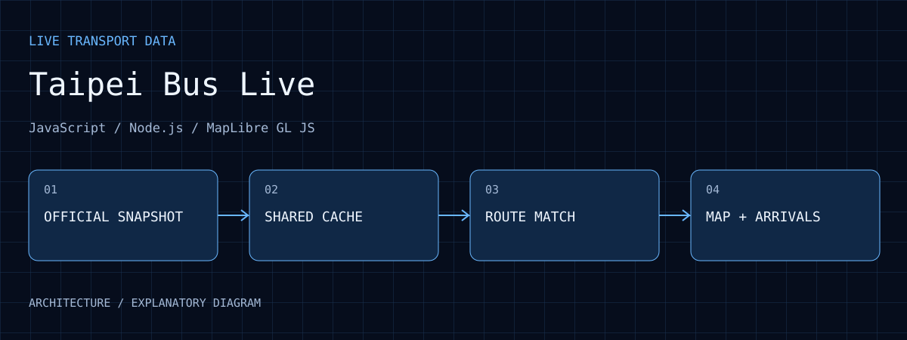

Implemented interactions
Public code provides route/plate search, clustering, favorites, route sharing and stop-arrival queries.
Taipei Bus Live
An interactive map built on official Taipei bus snapshots, with route and vehicle search, marker clustering, stop arrival estimates, favorites, and short-term position estimation along route geometry.
01 / EVIDENCE
Public code provides route/plate search, clustering, favorites, route sharing and stop-arrival queries.
Unchanged snapshots do not rebuild markers; animation handles visible vehicles and changed points.
Smooth movement is a short extrapolation from official reports. Read report age and estimation state alongside the map.
The saved Node test result for public revision 6d9db5e is 61 passed, 0 failed, covering data, motion, stop order, presentation and upstream handling. It was not rerun for this website update and does not measure road-position accuracy.
02 / WALKTHROUGH
The server shares vehicle snapshots rather than repeating upstream requests for every user. A timeout retains the previous snapshot with a delay marker. A visible marker does not mean fresh data.
The model uses BusShape geometry, direction and previous along-route progress. New GPS reports update position and speed through an along-route alpha-beta filter. Low-confidence matches shorten extrapolation, with an absolute 15-second cap before waiting for new data.
The browser animates visible vehicles only and avoids rebuilding markers for unchanged snapshots. A selected stop's official ETA describes the route/stop prediction, not an exact arrival time for the selected vehicle.
The core problem is intermittent, potentially stale data. Smooth animation is presentation; timestamps, bounded extrapolation and failure fallback make that presentation interpretable.
03 / PURPOSE
Bring official vehicle snapshots, route geometry, and stops into an interactive map.
04 / ARCHITECTURE

A Node.js server fetches Taipei bus positions, routes, stop order and arrivals with upstream timeouts.
Positions use a 1-second cache, route/stop indices six hours and arrival estimates a shared 15-second cache.
Official BusShape matching and an alpha-beta filter update route progress and speed, with confidence-limited extrapolation.
MapLibre GL JS clusters overview markers and updates visible changes, with search, favorites, sharing and mobile information cards.
05 / WORKFLOW
Share upstream responses and retain a visibly aged snapshot during temporary failures.
Use geometry, direction and earlier progress to constrain the vehicle model and reject outliers.
Move along a short route polyline for at most 15 seconds, then await a new report.
Load geometry and stop order on selection, and present official arrival estimates separately.
06 / ANALYSIS
Animation improves visual continuity without increasing the official sampling rate. Distinguish report time from rendering frequency.
Multiple clients can read one cached snapshot instead of independently increasing upstream requests. Retained snapshots must still show their age.
Route/stop ETA is not the exact arrival time of the selected vehicle. Direction, service and traffic affect the interpretation.
07 / REPRODUCE
08 / LIMITS
Beta. Position extrapolation is capped at 15 seconds and depends on report age and matching confidence. Arrival estimates do not give an exact arrival time for the selected vehicle.
09 / SOURCES
This page documents source code, interfaces and existing records; it does not use illustrative images as result evidence.